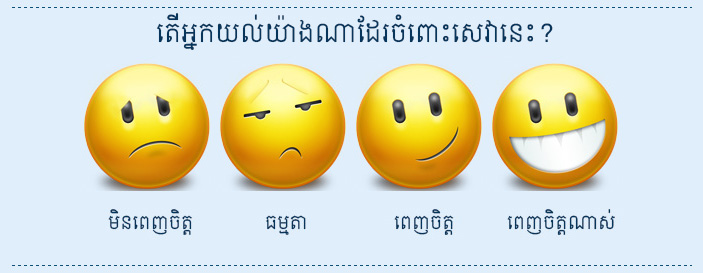
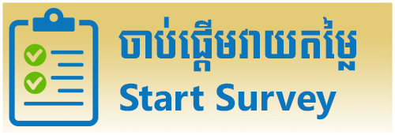

<ion-header>
  <ion-navbar>
    <ion-title>Home</ion-title>
  </ion-navbar>
</ion-header>

<ion-content padding>
 
  <div text-center style="background-color: gray">
    
    <div style="border-bottom: 2px solid #E0EEFC; width: 80%; margin: auto;"></div>
    <p><h3 padding style="color: white; font-family: Kh Mith Sala Pali;">ប្រព័ន្ធវាយតម្លៃបដិសណ្ឋារកិច្ចល្អ</h3>
  </div>

  

  <div text-center padding-vertical>
    <h3 style="font-family: Khmer Wat Phnom;"><strong>ដំណើរការប្រព័ន្ធវាយតម្លៃបដិសណ្ឋារកិច្ចល្អ</strong></h3>
    
  </div>

  <div text-center style="outline: 2px solid #E0EEFC; outline-offset: 4px;">
    
  </div>
  <div>

  </div>

</ion-content>
